走近量子纠缠
本科普系列是想尽量使用通俗的语言，向公众介绍神秘奇妙的‘量子纠缠’。
要认识神秘的量子纠缠，首先要认识神秘的量子现象。
不管是学哪个行业的，大概都听说过奇妙的量子现象。诸如测不准原理啦，薛定谔的猫之类 的，在日常生活中看起来匪夷所思的现象，却是千真万确存在于微观的量子世界中。
许多人将听起来有些诡异的量子理论视为天书，从而敬而远之。有人感叹说：“量子力学， 太不可思议了，不懂啊，晕！”
不懂量子力学，听了就晕，那是非常正常的反应。听听诺贝尔物理学奖得主，大物理学家 费曼的名言吧。费曼说：“我想我可以有把握地讲，沒有人懂量子力学！” 量子论的另一 创始人玻尔（Niels Bohr）也说过：“如果谁不为量子论而感到困惑，那他就是没有理解 量子论。”既然连费曼和玻尔都这样说，我等就更不敢吹牛了。
因此，我们暂时不要奢望‘懂得’量子力学。此一系列文章的目的是让我们能够多‘了解’、 多认识一些量子力学。因为量子力学虽然神秘，却是科学史上最为精确地被实验检验了的 理论，量子力学经历了100多年的艰难历史，发展至今，可说是到达了人类智力征程上的 最高成就。身为现代人，如果不曾‘了解’一点点量子力学，就如同没有上过因特网，没有 写过email一样，可算是人生的一大遗憾啊。
刚才提及量子现象时，说到了‘薛定谔的猫’，我们的讨论可由此开始。
薛定谔、女朋友、猫
薛定谔（E.Schr dinger ，1887—1961）是奥地利著名物理学家、量子力学的创始人之一， 曾获1933年诺贝尔物理学奖，量子力学中描述原子、电子等微观粒子运动的薛定谔方程， 就是以他而命名的。
‘薛定谔的猫’也称‘薛定谔佯谬’，是指薛定谔为说明量子力学中的‘叠加态’设计的一个 思想实验而导致的佯谬。
那么，首先我们需要了解，什么是‘叠加态’？
根据我们的日常经验，一个物体某一时刻，总会处于某个固定的状态。比如我说：女儿现在 ‘在’客厅里，或是说：女儿现在‘不在’客厅里。要么在，要么不在，两种状态，必居其一。 然而，在微观的量子世界中，情况却有所不同。微观粒子可以处于一种所谓‘叠加态’的状态 中，这种状态是不确定的。例如，电子可以同时位于两个不同的地点：A和B，也就是说， 电子既在A，又不在A。电子的状态是‘在’和‘不在’，两种状态按一定几率的叠加。电子的 这种混合状态，叫做‘叠加态’。
聪明的读者会说：“女儿此刻‘在’或‘不在’客厅，看一眼就清楚了。电子在A，或是不在A， 测量一下不就知道了吗？”说得没错，当我们对电子的状态进行‘测量’时，电子的‘叠加态’ 不复存在，而是‘坍缩’到‘在A’，或是‘不在A’，两个状态的其中之一。但是，微观与宏观之 不同，是在于观测之前。女儿在不在客厅，观测之前已成事实，并不以‘看’或‘不看’而转移 。而微观电子坍缩前的状态，并无定论，直到测量它，才因坍缩而确定。这是微观世界中 量子叠加态的奇妙特点。
尽管量子现象显得如此神秘。然而，量子力学的结论却早已在诸多方面被实验证实，被 学术界接受，在各行各业还得到各种应用，量子物理学对我们现代日常生活的影响无比 巨大。以其为基础而产生的电子学革命及光学革命将我们带入了如今的计算机信息时代。 可以说，没有量子力学，就不会有今天所谓的‘高科技’产业。
如何解释量子力学的基本理论，仍然是见仁见智，莫衷一是。这点也曾经深深地困扰着它的 创立者们，包括伟大的爱因斯坦。微观叠加态的特点与宏观规律如此不同，物理学家如 薛定谔也想不通。于是，薛定谔在1935年发表了一篇论文，题为《量子力学的现状》，在 论文的第5节，薛定谔编出了一个‘薛定谔猫’的理想实验，试图将微观不确定性变为宏观 不确定性，微观的迷惑变为宏观的佯谬，以引起大家的注意。果不其然！物理学家们对此 佯谬一直众说纷纭、争论至今。
以下是‘薛定谔猫’的实验描述。
把一只猫放进一个封闭的盒子里，然后把这个盒子连接到一个装置，其中包含一个原子核 和毒气设施。设想这个原子核有50%的可能性发生衰变。衰变时发射出一个粒子，这个粒子 将会触发毒气设施，从而杀死这只猫。根据量子力学的原理，未进行观察时，这个原子核 处于已衰变和未衰变的叠加态，因此，那只可怜的猫就应该相应地处于‘死’和‘活’ 的 叠加态。非死非活，又死又活，状态不确定，直到有人打开盒子观测它。
实验中的猫，可类比于微观世界的电子（或原子）。在量子理论中，电子可以不处于一个 固定的状态（0或1），而是同时处于两种状态的叠加（0和1）。如果把叠加态的概念用于 猫的话，那就是说，处于叠加态的猫是半死不活、又死又活的。
量子理论认为：如果没有揭开盖子，进行观察，薛定谔的猫的状态是‘死’与‘活’的叠加。 此猫将永远处于同时是死又是活的叠加态。这与我们的日常经验严重相违。一只猫，要么死 ，要么活，怎么可能不死不活，半死半活呢？别小看这一个听起来似乎荒谬的物理理想实验 。它不仅在物理学方面极具意义，在哲学方面也引申了很多的思考。
谈到哲学，聪明的读者又要笑了，因为在古代哲学思想中，不凡这种似是而非、模棱两可 的说法。这不就是辩证法的思想吗？你中有我，我中有你，一就是二，二就是一，合二而一 ，天人合一，等等等等，如此而已。
此话不假，因此才有人如此来比喻‘薛定谔的猫’：男女在开始恋爱前，不知道结果是好或者 不好，这时，可以将恋爱结果看成好与不好的混合叠加状态。如果你想知道结果，唯一的 方法是去试试看，但是，只要你试过，你就已经改变了原来的结果了！
无论从人文科学的角度，如何来诠释和理解‘薛定谔的猫’，人们仍然觉得量子理论听起来 有些诡异。有读者可能会说：“你拉扯了半天，我仍然不懂量子力学啊！”
还好，刚才我们已经给读者打了预防针，不是吗？没有人懂量子力学，包括薛定谔自己在内 ！薛定谔的本意是要用‘薛定谔猫’这个实验的荒谬结果，来嘲笑哥本哈根学派对量子力学， 对薛定谔方程引进的‘波函数’概念的几率解释，但实际上，这个假想实验使薛定谔自己， 站到了自己奠基的理论的对立面上，难怪有物理学家调侃地说到薛定谔：“薛定谔不懂 薛定谔方程！”
到此为止，我们解释了半天‘薛定谔猫’实验的来龙去脉，却只字未提薛定谔的女朋友之事。 再此赶快补上这段八卦，以免使读者大失所望。
薛定谔应该具有超凡的个人魅力，风流倜傥，女友无数。要不然怎么会触动舞台剧编导、 纽约剧作家马修韦尔斯的灵感，写出了一部‘薛定谔的女朋友’的舞台剧呢？
《薛定谔的女朋友》是关于爱，性，和量子物理学的一部另类浪漫喜剧。剧作家马修韦尔斯 本人，并没有受过超出高中课程的科学教育，但却痴迷于物理学的神秘。他说：”我永远 无法进入数学，但我发现它背后的概念，视觉和类比，是如此地引人入胜！”
舞台剧中有这么一段饶有趣味的话：“到底是波动-粒子的二象性难一点呢，还是老婆-情 人的二象性更难？”据说薛定谔有很多情妇，也有不少私生子，身边不乏红颜知己。薛定谔 的女友和薛定谔的猫一样不确定，薛定谔的婚姻爱情观和他的物理理论一样，不同凡响 。据说，薛定谔是个‘多情种子’类的人物，他的情妇虽然多，但他每爱一个女人时，都是 真心实意地。也许我们可以用量子力学的语言来作个比喻：薛定谔的感情和性生活，总是 处于一个包括很多本征态的复杂叠加态中。一定时期，叠加态‘坍缩’到某个本征态，薛定谔 便投入一个女友的怀抱。
但是，在薛定谔众多女友中，有一位很不一般的神秘女人，正是她，成为了这部舞台剧的 女主人公。
在1925年圣诞节前，薛定谔像往年一样，来到美丽的、白雪皑皑的阿尔卑斯山上度假，但 这次陪伴他的不是太太安妮，而是一位来自维也纳的神秘女友。薛定谔的这位女友神秘莫测 ，直到八十多年后的今天，也无人考证出她的身份来历。她不是考证者已知的薛定谔情妇中 的任何一位。无论如何，在这对情侣共度佳期的时期内，这位神秘女郎极大地激发了薛定谔 的灵感，使得他令人惊异地始终维持着一种极富创造力和洞察力的状态。因此，物理学家们 说，薛定谔的伟大工作是在他生命中一段情欲极其旺盛的时期内作出的。薛定谔自己也不 否认这点，他认为，通过观看这个引人注目的女人，他找到了困惑科学界波/粒二象性看似 矛盾的关键。果然，之后的一年内，薛定谔接连不断地发表了六篇关于量子力学的主要论文 ，提出了著名的薛定谔方程。因此，在享受量子力学带给我们辉煌灿烂的科技成果的今天， 我们也应该感谢这位神秘女郎的贡献。
综上所述，是‘薛定谔的神秘女友’，激发了薛定谔天才的想象力和灵感，使其建立了微观 世界中粒子的波函数所遵循的薛定谔方程。然后，薛定谔不同意哥本哈根派对波函数的解释 ，设计了‘薛定谔的猫’的思想实验。用薛定谔自己的话来说，他要用这个“恶魔般的装置”， 让人们闻之色变。薛定谔说：看吧，如果你们将波函数解释成粒子的几率波的话，就会导致 一个既死又活的猫的荒谬结论。因此，几率波的说法是站不住脚的！
这只猫的确令人毛骨悚然，相关的争论一直持续到今天。连当今伟大的物理学家霍金也曾经 愤愤地说：“当我听说薛定谔的猫的时候，我就跑去拿枪，想一枪把猫打死！”
在宏观世界中，既死又活的猫不可能存在，但许多许多实验都已经证实了微观世界中叠加态 的存在。总之，通过薛定谔的猫，我们认识了叠加态，以及被测量时叠加态的坍缩。
叠加态的存在，是量子力学最大的奥秘，是量子现象给人以神秘感的根源，是我们了解量子 力学的关键。
男孩物理学
要正确地理解量子力学，追溯其发展历史是非常必要的。量子力学不同于相对论和牛顿力学 ，它更少有被罩上个别伟人的光环。它可说成是有史以来最出色和最富激情的一代物理学家 集体努力的成果。综观量子力学发展史，真可谓是群星璀璨、光彩纷呈。因此，让我们先 回头看看历史。
说到当时的‘那一代’物理学家，最令人瞩目的是他们的年龄。在这点上，量子论的发展可与 近年来互联网公司的发展相提并论：都是一伙年轻人的天下！看看当年那一批争奇斗艳， 光彩夺目的科学明星吧，当他们对量子力学作出重要贡献时，大多数是20-30岁的年龄。 这也就是为什么在当时，量子力学被人们称为“男孩物理学”的原因。
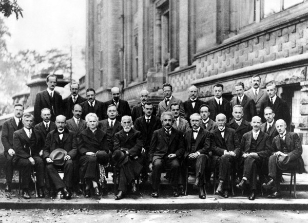
【这张著名的合影，摄于1927年第五次索尔维会议，点击可放大。 图片出处：维基百科。 关于索尔维会议和照片中的人物，还请维基百科为您讲述，请点击 “索尔维会议”】
让我们细数‘男孩’们对量子力学的贡献：
爱因斯坦1905年提出光量子假说，26岁。
玻尔1913年提出原子结构理论，28岁。
德布罗意1923年提出德布罗意波，31岁。
海森堡1925年创立矩阵力学，1927年提出测不准原理，24-26岁。
还有更多的年轻人：泡利25岁，狄拉克23岁，乌仑贝克25岁，古德施密特23岁，约尔当23 岁……
和他们比起来，36岁的薛定谔，43岁的波恩，42岁的普朗克，该算是老叔叔老爷爷了。
物理学家们将量子力学的诞生之日，定为1900年12月14日，普朗克在柏林宣读了他关于黑体 辐射的论文的那一天。在此之前，牛顿力学加上麦克斯韦方程建造的宏伟物理大厦虽然还 巍然挺立，但天空已经阴云密布，一片‘山雨欲来风满楼’的气氛弥漫其间。42岁的‘老爷爷 ’普朗克战战兢兢地伸出脑袋看看天，身边是潘多拉的盒子，这妖精该不该放出来呢？也许 它能驱除乌云，恢复蓝天，也许它将如同石头缝里蹦出的孙猴子，挥动金箍棒，将世界擾得 地覆天翻？普朗克的直觉告诉他，结论会是后者。但是，妖精总是要出来的，天意不可违啊 。于是，盒子被打开，量子力学这个怪物就此诞生了。
之后的100多年，尽管量子物理学一个里程碑又一个里程碑，成果斐然，但由于它惊世骇俗 、不同凡响的本质，孙悟空难跳出如来佛的掌心，量子论每前进一步似乎都举步维艰。
其实，整个物理学在争论些什么呢？说穿了也很简单。那是最古老也最困惑人的问题：“光 ，到底是什么？物质，又是什么？”
用现代的语言，说得再具体一些：“光和物质，到底是粒子还是波？”这个粒子说波动说纠缠 不清的问题，穿越时空几百年，引发了各种学说理论，伴随着越来越精确的实验验证，也 招来了一场又一场连绵不断的口水战。
在量子力学诞生之前，对此问题的争论有过一段时期的平静。那就是上文所说的‘牛顿力学 加上麦克斯韦方程建造的宏伟物理大厦’辉煌鼎盛之时。当时的物理学界以为一切完满天下 太平，古老的问题已经不是问题，答案犹如铁板钉钉：“光是一种电磁波，符合美妙无比的 麦克斯韦方程，其余的物质粒子，则符合放之四海而皆准的牛顿力学。”。
连躲在天国中的拉普拉斯妖也俯首下望，而且沾沾自喜地向世界宣称他的决定论：“一切 都在控制之中。给我宇宙现在的状态，我将可以告诉你宇宙的过去和未来！”。
然而，科学家们对世界的探索永远不会停止，探索的结果使晴朗的天空飘起了两片不起眼的 小乌云：那是迈克尔逊－莫雷实验和有关黑体辐射的研究。两片小乌云使物理学界陷入困境 。一切想驱散乌云的努力都适得其反。乌云日积月累，越来越大，以至于发展到了压顶之势 。
再后来，第一片乌云动摇了牛顿力学，引发了爱因斯坦的相对论革命，从第二片乌云中， 则诞生了本文所讨论的量子理论。
黑体辐射问题到底给经典物理造成了些什么麻烦呢？物理学是以实验为基础的，当理论解释 不了实验结果的时候，麻烦就来了。所谓黑体，是指对光不反射、只吸收，但却能辐射的 物体。经典理论认为光是一种电磁波，然而，由经典物理、麦克斯韦方程推导而出的‘维恩 公式’和‘瑞利－金斯公式’，却与黑体辐射的实验结果不相符合，甚至导致‘当辐射的频率 趋于无穷大时，辐射能量发散’的所谓‘紫外灾难’这种荒谬结论。
当年的普朗克使用了一个巧妙而新颖的思想方法：假设黑体辐射时，能量不是连续的，而是 一份一份地发射出来的话，就可以导出一个新的公式，这个公式在频率较小时自动回到瑞利 -金斯公式，在频率大时又自动回到维恩公式。因此，新公式在所有的频率范围，都与实验 符合得很好！这就是普朗克1900年论文的主要内容。
普朗克毕竟是一个传统而保守的德国物理学家，他只是按照科学方法办事，并未奢望要掀起 一场革命，连自己都不知道自己已经把‘量子’这个妖精引进了物理学， 这个妖精的标签是一个著名的普适常数\(h\)，被称为普朗克常数。当他用战粟发抖的手，打开 了潘多拉盒子之后，蹦出来的妖精第一棒就将他自己打晕了。因为在经典物理里，能量应该 是连续的，而普朗克的新理论却假设能量只能是一份一份地被发射出来，这看上去不是不可 思议吗？普朗克认为自己制造的这个‘量子妖精’破坏了物理学的完美，因此，他极力企图把 它给收回到潘多拉盒子中去。普朗克曾经花费了15年的时光，试图找到一种经典物理方法， 来导出同样的公式，以解决黑体辐射问题。但是这个试探却没有成功，‘量子妖精’放出来 之后，便一发不可收拾，后来更是四方挥舞金箍棒，大闹天宫。
普朗克不喜欢这个妖精，也没有提出光量子的思想，直到1905年，26岁的爱因斯坦对光电 效应的贡献才真正使人们看到了量子概念所闪现的光芒。
爱因斯坦比普朗克更进了一步，认为不仅仅场的能量是一份一份辐射出来的，而且光本身 就是由不连续的光量子组成，每一个光量子的能量 \(E=hv\)， 它只与光的频率\(v\)有关，而与强度无关。 这儿的\(h\)便是普朗克常数，那个被普朗克释放到世上来的小妖精！
啊，光不就是一种电磁波吗？它能精确地被麦克斯韦方程所描述，如今怎么又变成一个一个 的光量子了呢？这不就像是已经被打倒在地的阶级敌人-牛顿时代光的微粒说，又反攻倒算 打回来了么？其实，岂止反攻倒算，而是已经鸟枪换大炮，装备精锐，完全改头换面而来！ 还好，早在爱因斯坦出生的那一年，爱因斯坦还是个7、8个月大的婴儿时，麦克斯韦就48岁 英年早逝了，没有听到这个令他伤心的消息。麦克斯韦一生反对进化论，想必也接受不了‘ 量子论’这种古怪的妖精。不过，他对基督的虔诚胜于科学，临终时念念不忘的，不是他的 电磁理论，而是他的老婆。他的临终遗言是：“我的天父，求你看顾我的妻子！”
光量子的概念好像也不符合我们的日常生活经验。‘波光粼粼’，多么富有诗意，谁能看出光 是一粒一粒的呢！不过，这点倒不难理解，因为一个光量子的能量实在是太小了。
比如，蓝光频率：
\[ \]v=6.2796912×10^{14}(Hz)
普朗克常数：
\[ h=6.6 \times 10^{-34} \]因此，一个蓝光子的能量：
\[ E=hv=4 \times 10^{-19} 焦耳 \]这个数值很小，使我们感觉不到一份一份光量子的存在。
1913年，28岁的波尔提出了他的量子化的原子结构理论。当时，卢瑟福将原子类比于太阳系 的‘行星模型’，碰到了根本性的困难：在经典力学的框架下，这种结构将是不稳定的。为此 ，波尔在卢瑟福模型中引进了普朗克常数h，又是这个小妖精，又是使用这个公式 \(E=hv\)。波尔认为，和行星围绕太阳旋转有所不同，原子中的电子轨道，不是连续而任意 变化的，而是只能处于一个一个分立的能级中。也就是说，电子轨道是量子化的。
这个量子化的波尔原子理论，在当时取得了极大成功，成功地解释了原子稳定性，原子 光谱谱线等问题，使人们再一次体会到这个量子妖精，蹦跳在微观物理世界中时产生的巨大 力量。这时的量子力学，终于算是长成了一个调皮顽劣的大男孩，正在努力操练绝世武功， 企图伺机大展身手咧。
但是，波尔的原子理论的基础仍然是建立在经典物理的大地上，不是彻底革命的量子理论。 因此，在它诞生的那一刻，就种下了‘短命’的祸根，只迎来了10年左右的辉煌。
接着便到了1923年，31岁的德布罗意提出德布罗意波。1925年，24岁的海森堡创立矩阵力学 ，以及1926年，37岁的薛定谔建立薛定谔方程。
在这接踵而至的一大批‘男孩’们的努力下，‘男孩物理学’-- 量子力学，进入了它的成熟期 。
上帝掷骰子吗？
量子理论虽然是许多年轻人创建的集体物理学，但领袖人物还是屈指可数的。
1900年，普朗克的论文打开了潘多拉的盒子，释放出‘量子’这个妖精。那年，刚从瑞士的苏黎世工业大学毕业的爱因斯坦，21岁，正在四处奔波，焦头烂额地找工作，15岁的玻尔还只是哥本哈根一个顽皮的中学生。谁也料不到，这两个年轻人在十几年后成为了物理界的两大巨擎，而且，在量子理论的基本思想方面，两人巅峰对决，展开了一场一直延续到他们去世的旷世之争。
波尔与爱因斯坦的量子之争可以概括为一个著名的问题：上帝掷骰子吗？要解释清楚这个量子论中的哲学问题，我们首先介绍一下著名的杨氏双缝干涉实验。
杨氏双缝实验比量子论的历史还要早上100年。当初的法国物理学家托马斯·扬用这个简单实验挑战牛顿的微粒说，证明了光的波动性。原始的实验装置异常简单，这实验的影响却波及了几百年。托马斯·扬用经过一个小孔的光作为点光源，点光源发出的光穿过纸上的两道平行狭缝后，投射到屏幕上。然后，观测者可以看到，屏幕上形成了一系列明暗交替的干涉条纹。干涉是波特有的现象，因此，实验中出现的干涉条纹是光的波动性强有力的证明（见图1(a)）。
2002年，《物理世界》杂志评出十大经典物理实验，‘杨氏双缝实验用于电子’名列第一名。费曼认为，杨氏双缝电子干涉实验是量子力学的心脏，“包括了量子力学最深刻的奥秘”。
读者应该还记得我们在本文的第一节提到过的量子力学中神秘的‘叠加态’。电子双缝实验证实了电子叠加态的存在。那么，这个实验是如何相关于量子力学？又如何揭示了量子力学中最深刻的奥秘？实验中哪儿出现了神秘的叠加态？这个实验与‘上帝掷不掷骰子’又有什么关系？这些都是需要澄清的问题，且听我们慢慢道来。
首先，为什么说双缝实验中的干涉条纹是波的特征呢？让我们简单说明一下条纹的形成。
再看图1(a)，点光源发出的光，作为一种波，抵达狭缝。根据惠更斯原理，波面上的每一点都是一个子波源。因此，经过两条狭缝之后的波，可看作是位于两条狭缝处的子波源所发出的两列波的叠加。‘波的叠加’意味着‘振幅的叠加’：如果两列波到达同一位置时，振动方向相同，叠加后振幅增大；反之，如果振动方向相反，互相抵消，使得叠加后振幅减小。因为叠加后的振动在不同位置的增大或抵消，便形成了屏幕上明暗相间的干涉条纹。（图1(a)右边的图案）
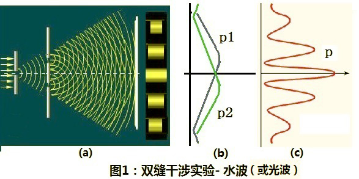
【图1（c）表示的是光波在屏幕上的强度分布。我们看到的曲线p是一条上下振动的图像，这对应于明暗相间强度变化的干涉条纹。】
如上所述，图中的(a)和(c)说明的都是‘双缝实验’的情形，图(b)又是什么呢？那是两次‘单缝实验’的结果。如果将一条狭缝遮住，就可以分别作两次单缝实验，我们发现，这两次单缝实验的结果都没有条纹，单缝实验光强度的分布，即波动振幅的平方，分别由(b)中的曲线p1和p2表示。
我们再次研究(b)、(c)中的曲线：p1、p2是单缝实验的强度分布，p是双缝实验的强度分布。显然，p并不等于p1、p2的简单叠加，事实上，它是单缝实验的振幅叠加后的平方。这是波动的特点，也是干涉条纹的来源。
如果用粒子来作双缝实验，会产生什么结果呢？读者会说：是用粒子，不是波，那就得不到干涉条纹了。答得很对，但是，不要忘了，我们的所谓粒子，有两种，除了经典意义下的粒子外，还有一种量子力学中的行为古怪的粒子。因此，我们遵循费曼设计的实验，对比一下水波、子弹和电子分别通过双缝时的不同行为。
水波的情况刚才已经说明过了，由图1表示。下面的图2则是用子弹（经典粒子）进行双缝实验的结果。
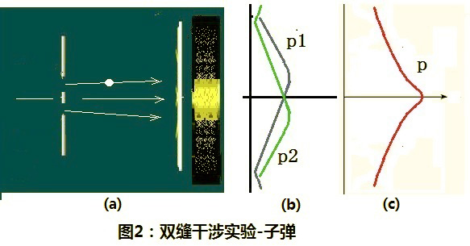
设想用一挺机关枪向狭缝扫射（图2(a)），子弹的发射服从经典概率统计规律。我们假设：一粒一粒发射出来，而又穿过狭缝到达了屏幕的子弹中，50%的几率是通过第一条縫而来，50%的几率通过第二条縫而来。假设每个打到屏幕上的子弹形成一个亮点的话，发射一定数目的子弹之后，在屏幕上就有了一个亮点聚集而成的图像（图2(a)右）。我们从实验结果发现：这个图像不同于波动的情形，它不是明暗相间的干涉条纹，而是从中心到两边，亮度逐渐下降的图像，如图2(c)的曲线p所示。
类似于波动双缝实验，我们也可以分别将狭缝之一关闭，对另一个开缝做两次子彈单缝实验，实验结果的两条亮度分布曲线由图2(b)中的p1、p2表示。比较图1(b)和图2(b)，不难看出，子弹单缝实验结果与水波单缝实验结果是相同的。然而，两种情形的双缝实验结果完全不同。子弹双缝实验的结果p，是两个单缝实验结果p1和p2的简单叠加，这是由概率的叠加性决定的。
总结以上所述，水波的双缝实验结果是相干叠加，体现水的波动性；子弹的双缝实验结果是非相干叠加，体现子弹的粒子性。如果我们用电子（或是光子及其它微观粒子）来作实验，结果又将如何呢？
我们可以类似于子弹的情形，用电子枪将电子一个一个地朝着狭缝发射出去。如图3所示：
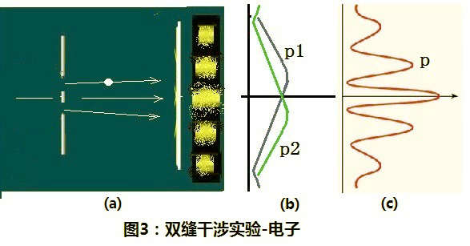
电子单缝实验的结果如图3中的(b)，曲线p1、p2与水波和子弹时一致。然而，电子双缝实验的结果p却是与水波的一样，出现了干涉条纹！
这个结果令经典物理学家们感到意外，因为，实验中的电子，和机枪发射子弹一样，是由电子枪一个一个发射出去的。因为在经典物理中，我们认为电子是粒子。既然是粒子，它的宏观轨道行为，应该和子弹没有实质的差别。双缝实验时，虽然两条缝都是打开的，但是每一个电子，应该象一个子弹那样，只能通过其中的一条缝到达屏幕。这样，结果就应该和子弹的结果一样，应该属于非相干叠加。
实验观察结果也显示，电子的确是像子弹那样，一个一个到达屏幕的，如下图所示，对应于到达屏幕的每个电子，屏幕上出现一个亮点。随着发射的电子数目的增加，亮点越来越多，越来越多……。当亮点多到不容易区分的时候，接收屏上显示出了确定的干涉图案。这是怎么一回事呢？这干涉从何而来？从电子双缝实验，我们会得出一个貌似荒谬的结论：一个电子同时通过了两条狭缝，然后，自己和自己发生了干涉！
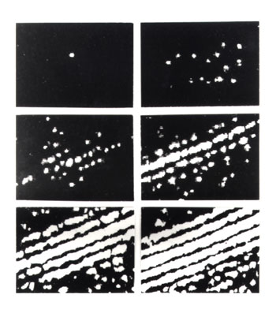
让我们运用量子论的概念，来理解电子这种不同寻常的非经典行为：实验中的电子同时穿过了两条狭缝，不就是相似于我们在第一节中说过的：‘电子处于一种叠加态，既在位置A，又在位置B’的情形吗？作为量子论中的叠加态粒子，每个电子（或光子）真是像孙悟空一样，有分身术，一个孙大圣到了两条狭缝处，就变成了两个大圣，同时穿过了两条狭缝！然后，两个真假孙悟空又自己跟自己打起来了！争斗的结果，有可能是双赢，变出一个大孙悟空，打得屏幕上异常明亮；也有可能两败俱伤，真假悟空全死光，那时，就对应于屏幕上暗淡的地方。
因此，双缝实验的结果表明：电子的行为既不等同于经典粒子，也不等同于经典波动，它和光一样，既是粒子又是波，兼有粒子和波动的双重特性，这就是波粒二象性。
读者也许会说：每个电子到底是穿过那条狭缝过来的，我们应该可以测量出来呀。不错，物理学家们也是这样想的。于是，他们便在两个狭缝口放上两个粒子探测器，以判定真假孙悟空到底走的那一边？然而这时，奇怪的事又发生了：两个粒子探测器从来没有同时响过！那好呀，这说明还是只有一个孙悟空，并没有分身。实验者感觉松了口气，刚刚想思考思考这干涉条纹的事，回头一看屏幕，咦？哪有什么干涉条纹呀。物理学家们反复改进、多次重复他们的实验，却只感到越来越奇怪：无论我们使用什么先进测量方法，一旦想要观察电子到底通过哪条狭缝？干涉条纹便立即消失了！也就是说，假孙悟空太狡猾了，他好像总能得知我们已经设置了抓他的陷阱，便隐身遁形不露面。悟空不用分身术，没有真假大圣间的战争，战场上也就没有了叠加和死伤，一切平静，实验给出经典的结果：和子弹实验的图像一模一样！后来，物理学家们给这种“观测影响粒子量子行为”的现象，取了一个古怪的名字，叫做：“波函数坍塌”。就是说：量子叠加态一经测量，就按照一定的概率，塌缩到一个固定的本征态，回到经典世界。而在没有被测量之前，粒子则是处于‘既是此，又是彼’的混合叠加不确定状态。因此，我们无法预知粒子将来的行为，只知道可能塌缩到某个本征态的概率。
以上解释使用的基本上是以波尔为代表的哥本哈根学派对量子理论的诠释。换言之，孙悟空具有分身而同时穿过两个洞的本领。但是，你无法得知他这功夫究竟是怎么回事，他绝不让你看到他玩分身术的详情，他只让你知道几个概率，上天派他到人间来掷骰子！
爱因斯坦不同意哥本哈根派的诠释，生气地说：“玻尔，上帝不会掷骰子!”
玻尔一脸不高兴：“爱因斯坦，别去指挥上帝应该怎么做!”
几十年后的霍金，看着历年的实验记录，有些垂头丧气地说：“上帝不但掷骰子，他还把骰子掷到我们看不见的地方去!”
上帝掷骰子吗？尽管以上霍金之言给出肯定的答案，但似乎至今仍然是个悬而未决的问题。
波尔和爱因斯坦之争
现在，让我们再回到波尔和爱因斯坦有关量子理论的争论-以下简称为‘波爱之争’。
两人都是伟大的物理学家，对量子理论的发展都做出了杰出的贡献。分别因为解决光电效应问题和量子化原子模型而获得1921年、1922年的诺贝尔物理学奖。爱因斯坦和波尔的争论主要是有关量子力学的理论基础及哲学思想方面。实际上，也正因为这两位大师的不断论战，量子力学才在辩论中发展成熟起来。爱因斯坦终身反对量子论，他提出了一个又一个的思想实验，企图证明量子论的不完备性和荒谬性，直到他们逝世之后，这场论战仍在物理学界继续进行。但遗憾的是，直到目前為止，每次的实验结果似乎并没有站在爱因斯坦这位伟人这边。
这场有关量子论的大论战搅得它的创立者们夜不能寐、寝食难安，当年在世的物理学家几乎全都被牵扯其中。学术界的纷争能促进学术的进步，但也能损害学者们的生理和心理健康，甚至还有物理学家因此而自杀的。
1909年，着名的奥地利物理学家玻尔兹曼在意大利度假的旅店里上吊自杀。玻尔兹曼性格孤僻内向，沉浸在他的“原子论”与奥斯特瓦尔德的“唯能论”不同见解的斗争中。这场论战与量子论之争拉不上多少关系，并且以玻尔兹曼的取胜而告终。但是，长长的辩论过程使玻尔兹曼精神烦躁，不能自拔，痛苦与日俱增，最后只能用自杀来解脱心中的一切烦恼。玻耳兹曼的死使学者们震惊，也在一定程度上影响了荷兰物理学家埃伦费斯特（Paul Ehrenfest，1880—1933）。后者曾经师从玻耳兹曼，是爱因斯坦的好友，其“浸渐假说”与波尔的对应原理，是在经典物理学和量子力学之间架起的两座桥梁。埃伦费斯特于1933年9月25日饮弹自尽，他的死震动了物理界。
波爱两人的第一次交锋是1927年的第五届索尔维会议。那可能算是一场前无古人后无来者的物理学界群英会。以下这张1927年的会议历史照片中，列出来的鼎鼎大名使你不能不吃惊。在这次与会的29人中，有17人获得了诺贝尔物理学奖。
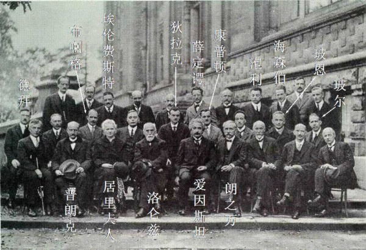
【照片来自网络】
索尔维是一位对科学感兴趣的实业家，因发明了一种制碱法而致富。据说索尔维财大气粗后自信心倍增，发明了一种与物理实验和理论都扯不上关系的，有关引力和物质的荒谬理论。尽管物理学家们对他的理论不屑一顾，但对他所举办的学术会议却是趋之若鶩。因此，当年那几届索尔维会议就变成了量子论的大型研讨会，也就是波爱之争的重要战场。
波爱之争有三个回合值得一提：分别起始於1927年，1930年，1933年的索尔维会议上。
爱因斯坦对量子论的质疑要点有三个方面，也就是爱因斯坦始终坚持的经典哲学思想和因果观念：一个完备的物理理论应该具有确定性，实在性，和局域性。
爱因斯坦认为，量子论中的海森堡原理违背了确定性。根据海森堡的测不准原理，一对共轭变量（比如：动量和位置，能量和时间）是不能同时准确测量的：当准确测定一个粒子在此刻的速度时，就无法测准其在此刻的位置。或者是，当准确测定一个粒子的能量时，就无法测准此刻的时间。因此他说：“上帝不掷骰子！”
这儿所谓的“上帝掷骰子”，不同于人掷骰子。当今的科学技术领域中，统计和概率是常用的数学工具。人们应用统计方法来预测气候的变化，股市的走向，物种的繁衍，人心的向背。几乎在各门学科中，都离不开‘概率’这个词。然而，我们在这些情况下应用概率的规律，是由於我们掌握的信息不够，或者是没有必要知道那么多。比如说，当人向上丢出一枚硬币，再用手接住时，硬币的朝向似乎是随机的，可能朝上，可能朝下。但这种随机性是因為硬币运动不易控制，从而使我们不了解硬币从手中飞出去时的详细信息。如果我们对硬币飞出时的受力情况知道得一清二楚，就完全可以预知它掉下来时的方向，因为硬币实际上遵从的是完全确定的宏观力学规律。而量子论不同於此，量子论中的随机性是本质的。换句话说：人掷骰子，是外表的或然；上帝掷骰子，是本质的或然。
所谓实在性，则类似於我们熟知的唯物主义，认为物质世界的存在不依赖於观察手段。月亮实实在在的挂在天上，不管我们看它，还是不看它。局域性的意思则是说：在互相远离的两个地点，不可能有瞬时的超距作用。
1927年10月，那是布鲁塞尔鲜花盛开，红叶飘零的季节，着名的第五届索尔维会议在此召开。如上面照片所示，这次会议群贤毕至，济济一堂。我们似乎从这张老照片众多闪光的名字中，看到了量子论两大派别各路英雄一个个生动的形象：每个人都身怀特技，带着自己的独门法宝，斗志昂扬、精神抖擞，应邀而来。
玻尔高举着他的“氢原子模型”，玻恩口口声声念叨着“概率”，德布罗意骑着他的“波”，康普顿西装上印着“效应”二字，狄拉克夹着一个“算符”，薛定谔挎着他的“方程”，身后还藏了一只不死不活的“猫”，布拉格手提“晶体结构”模型，海森堡和他的同窗好友泡利形影不离，两人分别握着“测不准原理”和“不相容原理”，埃伦费斯特也紧握他的“浸渐原理”大招牌。
最后登场的爱因斯坦，当时四十多岁，还没有修成像后来那种一头白发乱飘的仙风道骨形象。不过，他举着划时代的两面相对论大旗，头顶光电效应的光环。因此，他洋洋洒洒跨辈份地坐到了第一排老一辈无產阶级革命家的中间。那儿有一位德高望重的白发老太太，镭和仆的发现者居里夫人。另外，我们还看到了好些别的大师们的丰功伟绩：洛伦兹的“变换”、普朗克的“常数”、郎之万的“原子论”、威尔逊的“云雾室”，等等等等。
尽管人人都身怀绝技，各自都有不同的独门功夫，但大家心中都藏了一个量子妖精-由他们共同哺育喂大的孙悟空。这孙悟空到底是人还是猴？是鬼还是妖？是真还是假？诸位大师们对此莫衷一是，众说纷纭。
两派人马旗鼓相当：波尔的哥本哈根学派人数多一些，但爱因斯坦这边有薛定諤和德布罗意，叁个重量级人物，不可小觑。
最后，就正式会议来说，这是量子论一次异常成功的大会，波尔掌门的哥本哈根派和它对量子论的解释大获全胜。闭幕式上，爱因斯坦一直在旁边按兵不动，沉默静坐，直到玻尔结束了关于‘互补原理’的演讲后，他才突然发动攻势：“很抱歉，我没有深入研究过量子力学，不过，我还是愿意谈谈一般性的看法。”然后，爱因斯坦用一个关于\(\alpha\)
射线粒子的例子表示了对玻尔等学者发言的质疑，不过，他当时的发言相当温和。但是，在正式会议结束之后几天的讨论中，火药味就要浓多了。根据海森堡的回忆，常常是在早餐的时候，爱因斯坦设想出一个巧妙的思想实验，以为可以难倒玻尔，但到了晚餐桌上，玻尔就想出了招数，一次又一次化解了爱因斯坦的攻势。当然，到最后，谁也没有说服谁。
1930年秋，第六届索尔维会议在布鲁塞尔召开。早有准备的爱因斯坦在会上向玻尔提出了他的着名的思想实验—“光子盒”。
实验的装置是一个一侧有一个小洞的盒子，洞口有一块挡板，里面放了一只能控制挡板开关的机械钟。小盒里装有一定数量的辐射物质。这只钟能在某一时刻将小洞打开，放出一个光子来。这样，它跑出的时间就可精确地测量出来了。同时，小盒悬挂在弹簧秤上，小盒所减少的质量，也即光子的质量便可测得，然后利用质能关系：
\[ E = mc^2 \]便可得到能量的损失。这样，时间和能量都同时测准了，由此可以说明测不准关系是不成立的，玻尔一派的观点是不对的。
描述完了他的光子盒实验后，爱因斯坦看着哑口无言、搔头抓耳的玻尔，心中暗暗得意。不想好梦不长，只经过了一个夜晚，第二天，波尔居然‘以其人之道，还治其人之身’，找到了一段最精彩的说辞，用爱因斯坦自己的广义相对论理论，戏剧性地指出了爱因斯坦这一思想实验的缺陷。
光子跑出后，挂在弹簧秤上的小盒质量变轻即会上移，根据广义相对论，如果时钟沿重力方向发生位移，它的快慢会发生变化，这样的话，那个小盒上机械钟读出的时间就会因为这个光子的跑出而有所改变。换言之，用这种装置，如果要测定光子的能量，就不能够精确控制光子逸出的时刻。因此，波尔居然用广义相对论理论中的红移公式，推出了能量和时间遵循的测不准关系！
无论如何，尽管爱因斯坦当时被回击得目瞪口呆，却仍然没有被说服。不过，他自此后，不得不有所退让，承认了玻尔对量子力学的解释不存在逻辑上的缺陷。“量子论也许是自洽的”他说，“但却至少是不完备的”因為他认為，一个完备的物理理论应该具有确定性，实在性，和局域性！
玻尔虽然机敏地用广义相对论的理论回击了爱因斯坦“光子盒”模型的挑战，自己心中却仍然不是十分踏实，自觉辩论中有些投机取巧的嫌疑！从经典的广义相对论出发，是应该不可能得到量子力学测不准原理的，这其中许多疑问仍然有待澄清。况且，谁知道这个爱因斯坦下一次又会想出些什么新花招呢？玻尔口中不停地念着：“爱因斯坦，爱因斯坦……爱因斯坦，爱因斯坦……”心中无比感慨。玻尔对这第二个回合的论战始终耿耿于怀，直到1962年去世。据说，他的工作室黑板上还一直留着当年爱因斯坦那个光子盒的图。
波爱之争的第三个回合，就到了1935年，这场论战达到了它的顶峰。这就是我们下一篇要讲到的EPR佯谬，它将引领我们进入此系列文章的主题：量子纠缠。
量子纠缠态
波尔和爱因斯坦的第三次争论，本来应该发生在1933年的第七届索尔维会议上。但是，爱因斯坦未能出席这次会议，他被纳粹赶出了欧洲，刚刚风尘仆仆地到达美国，被应聘为普林斯顿高等研究院教授。德布罗依和薛定谔出席了会议，但薛定谔见双龙无首不想发言，德布罗依呢，据说是个法国贵族出身的花花公子，曾经用一页纸的论文打发结束了晃荡了五年的博士生涯，哪有精神去与这些人辩论啊。这令波尔大大松了一口气，会议上哥本哈根派唱独角戏，看起来量子论已经根基牢靠，论战似乎尘埃落定。
然而，爱因斯坦毕竟是个伟人，不是那么容易服输的。况且，那是上帝给他的使命：为物理学指路！无论是开创还是质疑，无论是披荆斩棘地朝前带领大军，还是回头转身，来一场唇枪舌战，其结果都是顺应天意：使物理这条猛兽不停地冲出困境，向前迈进。尽管他当时因战争而流离失所，尽管他的妻子身染重病，到了知天命年龄的爱因斯坦，始终未忘记他的这个神圣的‘天命’。
笔者的老师和论文委员会成员之一的约翰·惠勒（John Archibald Wheeler），曾经在一次聚会上，对笔者说过一段爱因斯坦的故事：1948年，普林斯顿的费曼在惠勒的指导下，完成了他的博士论文，他以惠勒早期的一个想法为基础，开创了用路径积分来表述量子力学的方法。当年，惠勒曾经将费曼的论文交给爱因斯坦看，并对爱因斯坦说：“这个工作不错，对吧？”又问爱因斯坦：“现在，你该相信量子论的正确性了吧！” 爱因斯坦沉思了好一会儿，脸色有些灰暗，怏怏不快地说：“也许我有些什么地方弄错了。不过，我仍旧不相信老头子（上帝）会掷骰子！”
再回到波爱第3次论战：当年的爱因斯坦，初来乍到普林斯顿，语言尚且生疏，生活不甚顺畅，因此，他不堪孤身独战，找了两个合作者，构成了一个被物理学家们称为不是十分恰当的组合。
Boris Podolsky和Nathan Rosen是爱因斯坦在普林斯顿高等研究院的助手。1935年3月，Physics Review杂志上发表了他们和爱因斯坦署名的EPR论文。文章中描述了一个佯谬，之后，人们就以署名的叁位物理学家名字的第一个字母命名，称为“EPR佯谬”。
EPR原文中使用粒子的坐标和动量来描述爱因斯坦构想的理想实验，数学表述非常复杂。后来，波姆用电子自旋来描述EPR佯谬，就简洁易懂多了。EPR论文中涉及到“量子纠缠态”的概念。这个名词当时还尚未被爱因斯坦等3位作者采用。（“纠缠”的名字是薛定谔在EPR论文之后不久，得意洋洋地牵出他那只可怖的猫时候，第一次提到的。）因此，我们首先解释一下，何谓纠缠态？
读者应该还记得我们解释过的“量子迭加态”。迭加态这个概念一直贯穿在我们这系列文章中，从薛定谔的猫，到双缝实验中有分身术的孙悟空，不都是这个匪夷所思的“迭加态”在作怪吗？不过，此文之前对迭加态的解释，都是针对一个粒子而言的。如果把迭加态的概念用于两个以上粒子的系统，就更产生出来一些怪之又怪的现象，那些古怪行为的专利，就该归功于“量子纠缠态”。
比如，我们考虑一个两粒子的量子系统。也就是说，有两个会分身的孙悟空同居一室，会有些什么样的状况发生呢？所有的状况不外乎归于两大类，一类是：两对孙悟空互不搭架，自己只和自己的分身玩。这种情况下的系统，可看作是由两个独立的粒子组成，没有产生什么有意思的新东西。
另一类情况呢，也就是两对孙悟空互相有关系的情况了。我们借用“纠缠”这个词来描述它们之间的互相关联。也就是说，这种情形下，两对量子孙悟空‘互相纠缠’，难舍难分。有趣的是，将来竟然有人出来证明说，这量子孙悟空之间亲密无间的程度，不是我等常人所能理解的，可以超过我们这个‘经典’人间所能达到的任何境界，任何极限哦。于是，我们只好叹息一声说：啊，这就是‘量子纠缠态’。
爱因斯坦等叁人提出的假想实验中，描述了两个粒子的互相纠缠：想象一个不稳定的大粒子衰变成两个小粒子的情况，两个小粒子向相反的两个方向飞开去。假设该粒子有两种可能的自旋，分别叫“左”和“右”，那么，如果粒子A的自旋为“左”，粒子B的自旋便一定是“右”，以保持总体守恒，反之亦然。我们说，这两个粒子构成了量子纠缠态。
用我们有关孙悟空的比喻将爱因斯坦的意思重复一遍：大石头中蹦出了两个孙悟空。每个孙悟空都握着一根金箍棒。这金箍棒有一种沿着轴线旋转的功能：或者左旋，或者右旋。两个孙悟空的金箍棒旋转方向互相关联：如果孙A的金箍棒为“左” 旋，孙B的金箍棒便一定是“右” 旋，反之亦然。我们便说，这两个孙悟空互相纠缠。
大石头裂开了，两个互相纠缠的孙悟空（A和B）并不愿意同处一室，而是朝相反方向拼命跑，它们相距越来越远，越来越远……。根据守恒定律，它们应该永远是“左右”关联的。然后，如来佛和观音菩萨同时分别在天庭的两头，抓住了A和B。根据量子论，只要我们不去探测，每个孙悟空的金箍棒旋转方向都是不确定的，处在一种左/右可能性迭加的混合状态（比如，各50%）。但是，两个孙悟空被抓住时，A、B金箍棒的迭加态便在一瞬间坍缩了，比如说，孙悟空A立刻随机地作出决定，让其金箍棒选择 “左”旋。但是，因为守恒，孙悟空 B就肯定要决定它的金箍棒为“右”旋。问题是，在被抓住时，孙悟空A和孙悟空B之间已经相隔非常遥远，比如说几万光年吧，它们怎么能够做到及时地互相通信，使得B能够知道A在那一霎那的随机决定呢？除非有超距瞬时的信号（心灵感应）来回于两个孙悟空之间！而这超距作用又是现有的物理知识不容许的。于是，这就构成了佯谬。因此，EPR的作者们洋洋得意地得出结论：波尔等人对量子论的几率解释是站不住脚的。
此一时彼一时！这时的波尔，已经知己知彼、老谋深算。他深思熟虑地考虑了一阵之后，马上上阵应战。很快就明白了，爱因斯坦的思路完全是经典的，总是认为有一个离开观测手段而存在的实在世界。这个世界图像是和波尔代表的哥本哈根派的“观测手段影响结果”的观点完全不一致的。玻尔认为，微观的实在世界，只有和观测手段连起来讲才有意义。在观测之前，并不存在两个客观独立的孙悟空实在。只有波函数描述的一个互相关联的整体，并无相隔甚远的两个分体，既然只是协调相关的一体，它们之间无需传递什么信号！因此，EPR佯谬只不过是表明了两派哲学观的差别：爱因斯坦的“经典局域实在观”和波尔一派的“量子非局域实在观”的根本区别。
当然，哲学观的不同是根深蒂固难以改变的。爱因斯坦绝对接受不了玻尔的这种古怪的说法，即使在之后的二叁十年中，玻尔的理论占了上风，量子论如日中天，它的各个分支高速发展，给人类社会带来了伟大的技术革命。爱因斯坦仍然固执地坚持他的经典信念，站在反对量子论的那边。
刚才谈到的约翰·惠勒，曾经与波尔及爱因斯坦在一起工作过，被人称为“哥本哈根学派的最后一位大师”，直到2008年去世，惠勒90多岁的高龄还在继续思考量子力学中的哲学问题。记得惠勒曾引用玻尔的话说，“任何一种基本量子现象只在其被记录之后才是一种现象”。意思就是说，比如我们上面说到的两个互相纠缠的孙悟空，在被抓住之前，它们到底在哪里？离多远？是个什么模样？有没有金箍棒？金箍棒是左旋还是右旋？哥本哈根派认为，这些全都是些无意义的、不该问的问题。还没有被如来佛和观音抓住之前，没有什么所谓的“两个孙悟空”，它们并不是真实存在的东西！
惠勒对量子论的贡献是非同一般的。上世纪80年代初期，笔者有幸与惠勒博士在一起工作，并准备和翻译当时他去中国访问的讲稿，那篇讲稿是基于他的一篇论文：“Law without Law”，后来，此讲稿由科大的方励之编着，1982年出版，取名为《物理学和质朴性-没有定律的定律》。在讲稿中，惠勒提到他在1979年，为纪念爱因斯坦诞辰100周年的普林斯顿讨论会上，提出的所谓“延迟选择实验”（delayed choice experiment）。这个“延迟选择实验”，是我们讨论过的“电子双缝干涉”实验的一个令人吃惊的新版本。在新构想中，惠勒戏剧化地将实验稍加改变，便可以使得实验员能在电子已经通过双缝之后，作出“延迟决定”，从而改变电子通过双缝时的历史！这种十分怪异的，好像能从将来触摸到过去的说法，量子论的哥本哈根派又如何解释呢？这个实验彻底地挑战了经典物理的因果律。
惠勒曾经用一个龙图来说明这一点。这个龙图也可以用费曼的路径积分观点来理解：龙的头和尾巴对应于测量时的两个点，在这两点测量的数值是确定的。根据量子力学的路径积分解释，两点之间的关联可以用它们之间的所有路径贡献的总和来计算。因为要考虑所有的路径，因此，龙的身体就将是糊里糊涂的一片（如下图所示）。
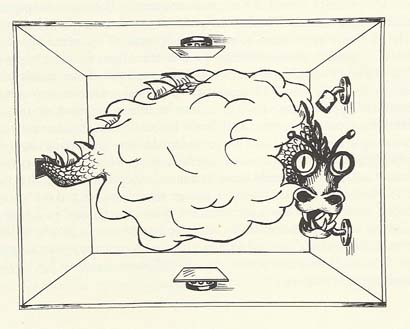
【惠勒的龙：Field Gilbert画，扫描自Niels Bohr: A Centenary Volume(Harvard 1985)，p151】
惠勒提出“延迟选择实验”时，已经到了1979年。早在1964年，出于捍卫爱因斯坦EPR论文的初衷，另一位杰出的英国物理学家，约翰•斯图尔特•贝尔（John Stewart Bell），就已经带着他的“贝尔不等式”，潇洒登场了。
帮倒忙的贝尔
上一讲中所提到的约翰·惠勒，是“黑洞”一词的命名者。学物理的也许记得他和他两个学生合写的那部大块头著作：《引力论》（Gravitation）。此书洋洋洒洒1279页，拿起来像块大砖头，是一部既学术严谨，又风格诙谐的巨著
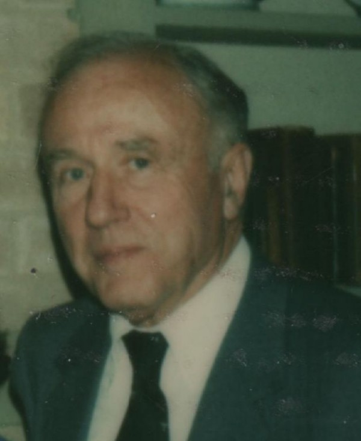
【John Wheeler，1984年笔者摄于UT，Austin】
惠勒不仅构想了“延迟选择实验”，也是提出验证光子纠缠态实验的第一人。他在1948年提出，由正负电子对湮灭后所生成的一对光子应该具有两个不同的偏振方向。一年之后，吴健雄和萨科诺夫成功地完成了这个实验，证实了惠勒的预言，生成了历史上第一对互相纠缠的光子。
物理理论是必须用实验来验证的，这就是为什么诸如波尔、爱因斯坦、惠勒这些大理论物理学家都非常热衷于提出一个又一个思想实验的原因。量子纠缠态近年来宏图大展，也是以实验中的不断突破为基础。这个突破起始于英国物理学家约翰•斯图尔特•贝尔，他用他著名的“贝尔不等式”，将爱因斯坦EPR佯谬中的思想实验推进到真实可行的物理实验。
贝尔于1928年出生在北爱尔兰的一个工人之家，那是波尔和爱因斯坦索尔维会上首次开战后的第二年。也许这是上帝在冥冥之中，派来的一个将来能够突破“波爱世纪之争”僵局的使者吧。小时候的贝尔一头红发，满脸雀斑，为人诚实，聪明好学。长大后，则迷上了理论物理，他严谨多思，意志顽强，不屈不饶，敢作敢当。对疑难问题一头扎下去，不弄个水落石出绝不罢休。
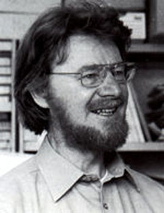
【John Stewart Bell。照片来自网络：http://www.dipankarhome.com/】
然而，量子论的理论研究只是贝尔的业余爱好。他多年供职于欧洲高能物理中心(CERN)，做加速器设计工程有关的工作，与理论物理，特别是量子论的理论基础的工作，相差甚远。贝尔只能利用业余时间来研究理论物理，正是这一业余研究使贝尔留名于物理史。
我们再回到波爱之争的顶峰：EPR佯谬的问题上来。当时波尔写文章回击了爱因斯坦等人的质疑，世纪争论似乎平息了，哥本哈根诠释成为量子论的正统解释。并且，既然问题是出在两大巨头不同的的哲学观上，便引不起多少人的兴趣。大多数科学家已经很少关心他们的争执。量子论的成功有目共睹，科技革命的果实每个人都乐于分享，每天早上太阳照样从东方升起，谁也看不见波函数如何塌缩，又有谁管那些微观世界的小孙悟空们被抓之前是不是“真实存在”的呢？波尔有他的道理，只要抓住孙悟空时，它是存在的就行了！
当然，也总是有那么一些脑袋停不下来的理论物理学家，仍然在冥思苦想这些问题：如何解释量子论中诡异的相干性和纠缠性呢？在此我们顺便总结一下前几节中我们所学到的：相干性涉及光和粒子的波粒二相性，最简单的例子是双缝干涉实验；纠缠性是EPR论文中提出的，涉及多个粒子的纠缠态。这是了解量子论诡异性的两个层次。
其实，双方的争执为什么三番五次不能平息呢？关键问题是：爱因斯坦这边坚持的是一般人都具备的经典常识，波尔一方更执着于微观世界的观测结果。那么，既然爱因斯坦不同意波尔的几率解释，有人就总想找出别的解释，既能照顾到爱因斯坦的“经典情结”，又能导出量子论的结论。这其中，支持度较多的有 ‘多世界诠释’和‘隐变量诠释’。
可以再借用薛定谔的猫来简述‘多世界诠释’：持这种观点的人认为，两只猫都是真实的。有一只活猫，有一只死猫，但它们位于不同的世界中。当我们向盒子里看时，整个世界立刻分裂成它自己的两个版本。这两个版本在其余的各个方面都是全同的。唯一的区别在于其中一个版本中，原子衰变了，猫死了；而在另一个版本中，原子没有衰变，猫还活着。
惠勒、霍金、费曼、温伯格等都在一定的程度上，支持‘多世界诠释’。实际上在目前，‘多世界诠释’已经代替‘哥本哈根诠释’，成为了量子论解释的主流派。但当初的爱因斯坦并不喜欢它，曾经诙谐地说：“我不能相信，仅仅是因为看了一只老鼠一眼，就使得宇宙发生了剧烈的改变！”的确，量子力学只涉及到微观粒子的问题，大可不必牵动整个宇宙！这其中的诡异性，恐怕比‘哥本哈根诠释’，有过之而无不及。因此，我们也回避回避，不在这里讨论它。 贝尔当初所热衷的，是‘隐变量’的问题。
在前面的‘波爱之争’一节中，我们用人掷硬币的例子来说明‘上帝掷骰子’，与‘人掷骰子’的区别。上抛的硬币，实际上是完全遵循确定的力学规律的，它之所以表现出随机性，是因为我們不了解硬币从手中飞出去時的詳細信息。也就是说，我们放弃了一些‘隐变量’：硬币飞出時的速度、角速度、方向、加速度……等等。如果忽略外界的影响，把这些隐变量全都计算进去，我们可以说：上抛硬币掉回原处时的状态是在离开手掌的那一刻就决定了的！
现在，贝尔想，爱因斯坦提出的EPR佯谬，是否也是因为我们忽略了某些隐变量的原因呢？贝尔更相信爱因斯坦的观点：既然两个互相纠缠的孙悟空被抓住的那一刹那，不可能瞬时超距地传递信息，那么，它们被抓住时候的状态，就应该是在它们从石头缝中蹦出来，互相分开的那一刻，就已经决定了。这就和我们掷硬币的情形类似。而不是像波尔所认为的那样，后来被抓住时，才临时随机选择而塌缩的！
贝尔要用实际行动来支持伟人爱因斯坦，要研究这其中潜藏着的隐变量！
可是，他一开始就碰到了高手：早在1932年，冯·诺依曼（J.Von Neumann）在他的著作《量子力学的数学基础》中，为量子力学提供了严密的数学基础，其中捎带着做了一个隐变量理论的不可能性证明。他从数学上证明了，在现有量子力学适用的领域里，是找不到隐变量的！
冯·诺依曼何等人物啊！天才神童，计算机之父。这位数学大师一言既出，二十年内，量子论的隐变量理论无人问津。还好，当贝尔在60年代碰到这堵高墙的时候，前面已经有人为他开路：美国物理学家戴维•玻姆（David Bohm）在50年代的工作，为冯·诺依曼的隐变量不可能性证明提供了一个实际的反例。而且，玻姆还将原来EPR论文中非常复杂的测量位置和动量的实验，简化成了测量‘电子自旋’的实验。
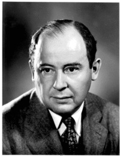
顽强的贝尔虽然是‘业余’理论物理学家，却有‘敢摸老虎屁股’的精神。他仔细研究了冯·诺依曼有关‘隐变量不可能性证明’的工作后，找出了大师在数学和物理的交接之处，有一个小小的漏洞。
冯·诺依曼在他的证明中，用了一个假设：“两个可观察量之和的平均值，等于每一个可观察量平均值之和”。但是，贝尔指出，如果这两个观察量互为共轭变量，也就是说，当它们满足量子力学中的测不准原理的话，这个结论是不正确的。
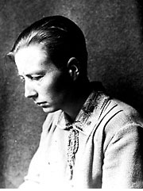
【Grete Hermann，照片来自网络：http://en.wikipedia.org/wiki/Grete_Hermann】
这儿可以插入一段有趣的历史。贝尔是在1965年才指出冯•诺依曼的错误的。其实，早在1935年，有一个鲜为人知的德国女数学家格雷特•赫尔曼（Grete Hermann，1901-1984）就指出了天才数学大师的这点失误。格雷特•赫尔曼是“代数女皇”，著名数学家艾米•诺特（Emmy Noether）在哥根廷大学的第一个学生。她早期对量子力学的数学哲学基础作了重要的贡献。1935年，格雷特在一篇文章中提出对冯•诺依曼有关‘隐变量不可能性证明’的驳斥。但遗憾的是，此文长期被忽略，直到贝尔1964年再次提出这点之后，又过了10年，1974年，文章发表将近四十年后，格雷特的原文才被另一个数学家Max Jammer发掘出来，为这位默默无闻的数学家正名。由此可见，名人的威力是何等之强大啊。
第二次世界大战开始后，格雷特•赫尔曼积极参与了反纳粹组织的各种活动。后来几十年，她也不再涉猎数学和物理，而将她的人生兴趣转向了政治，此是后话。
贝尔的道路畅通了，开始构想他的理论，以此来支持他的偶像爱因斯坦，企图将量子物理的图像搬回到经典理论的大厦中！不过，他万万没料到，他最终是帮了爱因斯坦的倒忙，反过来证明了量子力学的正确性！首先，在下一节中，我们稍微用点简单的数学，扼要地说明贝尔如何得到了他的著名的不等式。
贝尔不等式
1963-1964年，在长期供职于欧洲核子中心（CERN）后，约翰·贝尔有机会到美国斯坦福大学访问一年。北加州田园式的风光，四季宜人的气候，附近农庄的葡萄美酒，离得不远的黄金海滩，加之斯坦福大学既宁静深沉，又宽松开放的学术气氛。这美好的一切，孕育了贝尔的灵感，启发了他对EPR佯谬及隐变量理论的深刻思考。
贝尔开始认真考察量子力学能否用局域的隐变量理论来解释。贝尔认为，量子论表面上获得了成功，但其理论基础仍然可能是片面的，如同瞎子摸象，管中窥豹，没有看到更全面、更深层的东西。在量子论的地下深处，可能有一个隐身人在作怪：那就是隐变量。
根据爱因斯坦的想法，在EPR论文中提到的，从一个大粒子分裂成的两个粒子的自旋状态，虽然看起来是随机的，但却可能是在两粒子分离的那一刻（或是之前）就决定好了的。打个比喻说，如同两个同卵双胞胎，他们的基因情况早就决定了，无论后来他（她）们相距多远，总在某些特定的情形下，会作出一些惊人相似的选择，使人误认为他们有第六感，能超距离地心灵相通。但是实际上，是有一串遗传指令隐藏在它们的基因中，暗地里指挥着他们的行动，一旦我们找出了这些指令，双胞胎的‘心灵感应’就不再神秘，不再需要用所谓‘非局域’的超距作用来解释了。
尽管粒子自旋是个很深奥的量子力学概念，并无经典对应物，但粗略地说，我们可以用三维空间的一段矢量来表示粒子的自旋。比如，对EPR中的纠缠粒子对A和B来说，它们的自旋矢量总是处于相反的方向，如下图中所示的红色矢量和蓝色矢量。这两个红蓝自旋矢量，在三维空间中可以随机地取各种方向，假设这种随机性是来自于某个未知的隐变量L。为简单起见，我们假设L只有八个离散的数值：
\[ L=1,2,,3,4,5,6,7,8 \]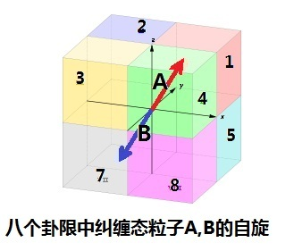
由于A、B的纠缠性，图中的红矢和蓝矢总是应该指向相反的方向，也就是说，红矢方向确定了，蓝矢方向也就确定了。因此，我们只需要考虑A粒子的自旋矢量（红矢）的空间取向就够了。假设红矢出现在八个卦限中的概率分别为
\[ n1,n2...n8 \]由于红矢的位置在8个卦限中必居其一，因此我们有：
\[ n1+n2+n3+n4+n5+n6+n7+n8=1 \]现在，我们列出一个表，描述A、B的自旋矢量在3维空间可能出现的8种情况。下图中的左半部分列出了在这些可能情况下，自旋矢量在xyz方向的符号：
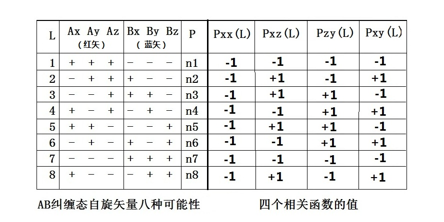
既然AB二粒子系统形成纠缠态，互为关联，我们便定义几个关联函数，用数学语言来更准确地描述这种关联的程度。
比如，我们可以如此来定义\(Pxx(L)\)：
观察\(x\)方向红矢的符号，和\(x\)方向蓝矢的符号，如果两个符号相同，函数\(Pxx(L)\)的值就 为\(+1\)，否则，函数\(Pxx(L)\)的值就为\(-1\)。
我们从上表左边列出的红矢蓝矢的符号不难看出，\(Pxx(L)\)的8个数值都是\(-1\)。
然后，我们使用类似的原则，可以定义其他的关联函数。比如说，\(Pxz(L)\)，是\(x\)方向 红矢符号，与\(z\)方向蓝矢符号的关联，等等。
在上图中的右半部分，我们列出了\(Pxx(L)\) 以及\(Pxz(L)\)、\(Pzy(L)\)、\(Pxy(L)\)的数值。
现在，贝尔继续按照经典的思维方式想下去：我们的小孙悟空A和B蹦出石头缝时，它们的两个自旋看起来是随机的，但实际上是按照上面的列表互相关联。然后，他们朝相反方向拼命跑。经过了一段时间之后，两个小孙悟空分别被如来佛和观音菩萨抓住了。如来和观音分别对A和B的自旋方向进行测量。因为L是不可知的隐变量，因此，只有关联函数的平均值才有意义。根据上面表中的数值，我们不难预测一下这几个关联函数被测量到的平均值：
\begin{align} Pxx=−n1−n2−n3−n4−n5−n6−n7−n8=−1 \\ Pxz=−n1+n2+n3−n4+n5−n6−n7+n8 \\ Pzy=−n1−n2+n3+n4+n5+n6−n7−n8 \\ Pxy=−n1+n2−n3+n4−n5+n6−n7+n8 \end{align}让我们直观地理解一下，这几个关联函数是什么意思呢？ 可以这样来看：\(Pxx\)代表的是\(A\)和\(B\)都从\(x\)方向观测时，它们的符号的平均相关性。 因为纠缠的原因，\(A\)、\(B\)的符号总是相反的，所以同被在\(x\)方向观察时，它们的平均 相关性是\(-1\)，即反相关。
类似的，\(Pxz\)代表的是从\(x\)方向观测\(A\)，从\(z\)方向观测\(B\)时，它们符号的平均相关性 。如果自旋在每个方向的概率都一样，即：
\[ n1=n2=...n8=1/8 \]的话，我们会得到\(Pxz\)为\(0\)。对\(Pzy\)和\(Pxy\)，也得到相同的结论。换言之，当概率 均等时，如在相同方向测量\(A\)、\(B\)的自旋，应该反相关；而如果在不同方向测量\(A\)和\(B\) 的自旋，平均来说应该不相关。
我们可以用一个通俗的比喻来加深对上文的理解： 两个双胞胎A和B，出生后从未见过面，互相完全不知对方情况。一天，两人分别来到 纽约和北京。假设双胞胎诚实不撒谎。当纽约和北京的警察问他们同样的问题：“你是哥哥 吗？”，如果A回答“是”，B一定是回答“不是”，反之亦然。对这个问题，他们不需要 互通消息，回答一定是反相关的，因为问题的答案是出生时就因出生的顺序而决定了的（ 这可相仿于\(Pxx=-1\)的情况）。但是，如果纽约警察问A：“两人中你更高吗？”，而北京 警察问B：“你跑得更快吗？”，按照我们的经典常识，两人出生后互不相识，从未比较过 彼此的高度，也从未一起赛跑。所以，他们的回答就应该不会相关了（这可相仿于 \(Pxz=0\)的情况）。
现在再回到简单的数学：我们在\(Pxz\)、\(Pzy\)和\(Pxy\)的表达式上，做点小运算。首先， 将\(Pxz\)和\(Pzy\)相减再取绝对值后，可以得到：
\[ |Pxz−Pzy|=2|n2−n4−n6+n8|=2|(n2+n8)−(n4+n6)| （7.1） \]然后，利用有关绝对值的不等式\(|x−y|<=|x|+|y|\)，我们有：
\[ 2|(n2+n8)−(n4+n6)|<=2(n2+n4+n6+n8)= \\ (n1+n2+n3+n4+n5+n6+n7+n8)+ \\ (−n1+n2−n3+n4−n5+n6−n7+n8)=1+Pxy（7.2） \]这样，从（7.1）和（7.2），我们得到一个不等式：
\[ |Pxz−Pzy|<=1+Pxy （7.3） \]这就是著名的贝尔不等式。上述不等式是贝尔应用经典概率的思维方法得出的结论。因此，它可以说是在经典的框架下，这三个关联函数之间要满足的约束条件。也就是說，经典的孙悟空不可以胡作非为，它的行动是被师傅唐僧的紧箍咒制约了的，得满足贝尔不等式！
但是，如果是量子世界的量子孙悟空，情况又将如何呢？当然只有两种情形：如果量子孙悟空也遵循贝尔不等式，那就好了，万事大吉！爱因斯坦的预言实现了。量子论应该是满足‘局域实在论’的，量子孙悟空表现诡异一些，只不过是因为有某些我们不知道的隐变量而已，那不着急，将来我们总能挖掘出这些隐变量的。第二种情况：那就是量子孙悟空不遵循贝尔不等式，贝尔用他的‘贝尔定理’来表述这种情形：“任何局域隐变量理论都不可能重现量子力学的全部统计性预言”。如果是这样的话，世界好像有点乱套！
不过没关系，贝尔说，重要的是，这几个关联函数是在实验室中可能测量到的物理量。这样，我的不等式就为判定EPR和量子力学谁对谁错提供了一个实验验证的方法。
那好，理论物理学家们说，我们就暂时停止耍嘴皮，让将来的实验结果来说话吧。